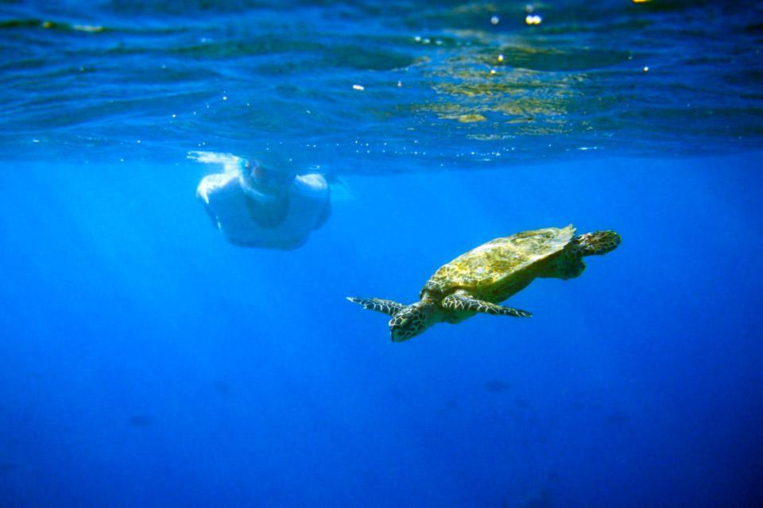
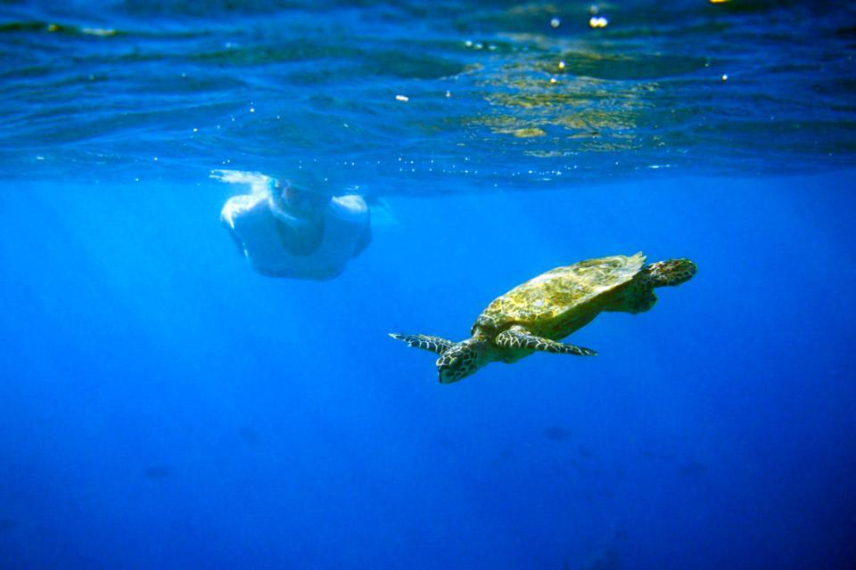

Bentota Turtle Hatcheries
Nestled along the picturesque shores of Sri Lanka, the Bentota Turtle Hatchery serves as a vital sanctuary for endangered sea turtles, embodying the country's commitment to marine conservation. Situated in the coastal town of Bentota, this hatchery plays a crucial role in protecting and preserving these magnificent creatures. Through its tireless efforts, the Bentota Turtle Hatchery not only raises awareness about the plight of sea turtles but also contributes to their survival.
Conservation and Protection
At the Bentota Turtle Hatchery, dedicated conservationists and volunteers work tirelessly to safeguard sea turtle nests from poaching and other threats. By collecting the eggs and providing a safe environment, they significantly increase the chances of survival for the hatchlings. The hatchery also conducts educational programs, enlightening visitors about the significance of sea turtle conservation and the challenges they face in their natural habitat. These initiatives inspire both locals and tourists to actively participate in the preservation of these majestic creatures.
Release and Rehabilitation
As the hatchlings grow stronger, they are released back into the ocean, symbolizing a remarkable journey and emphasizing the hatchery's commitment to returning them to their natural habitat. Furthermore, the Bentota Turtle Hatchery serves as a rehabilitation center for injured sea turtles, providing medical care and nursing them back to health. This compassionate approach ensures their well-being and increases their chances of survival in the wild.
Community Engagement and Sustainable Practices
The Bentota Turtle Hatchery actively involves the local community in its conservation efforts. By engaging with fishermen and educating them about sustainable practices, the hatchery promotes responsible fishing techniques that reduce accidental turtle captures and preserve their habitat. This collaboration fosters a sense of environmental stewardship among the community, reinforcing the importance of safeguarding these vulnerable species.
 

The Bentota Turtle Hatchery in Sri Lanka stands as a testament to the country's unwavering dedication to protecting and preserving endangered sea turtles. Through its conservation efforts, educational programs, rehabilitation initiatives, and community engagement, the hatchery serves as a beacon of hope for the survival of these magnificent creatures. A visit to this sanctuary not only offers a glimpse into the incredible world of sea turtles but also leaves visitors with a deep appreciation for the importance of marine conservation. The Bentota Turtle Hatchery is a shining example of how human compassion and proactive measures can make a significant impact on the preservation of our precious marine ecosystems.